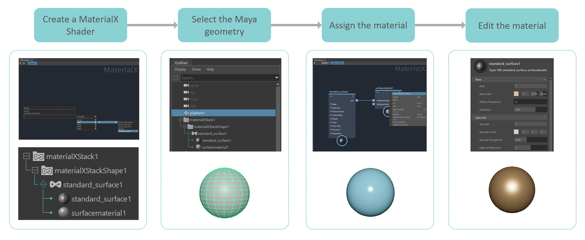

Overview of the MaterialX data model for LookdevX
Basic workflow:
MaterialX data model supports surface, displacement and volume shaders. The following diagram describes a workflow for working with LookdevX using the MaterialX data model.

Assign new materials A material assignment menu is available in both the Outliner and Viewport. You can assign either surface or volume material to your model.


Assign existing materials You can right-click to assign an existing material to Maya geometry in both the Outliner and LookdevX Graph Editor.